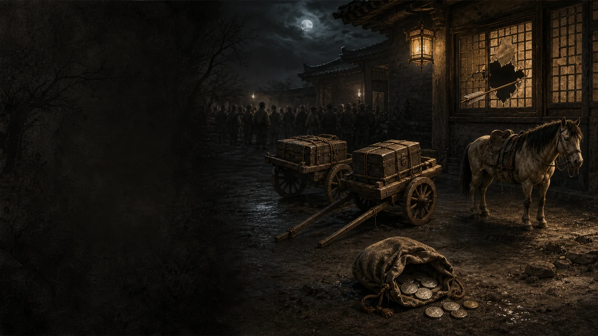
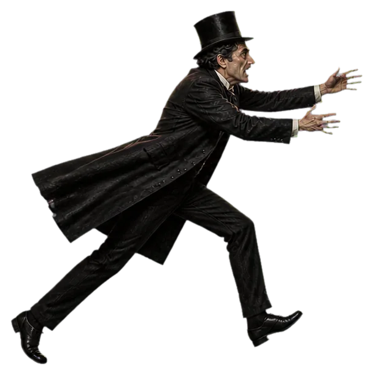
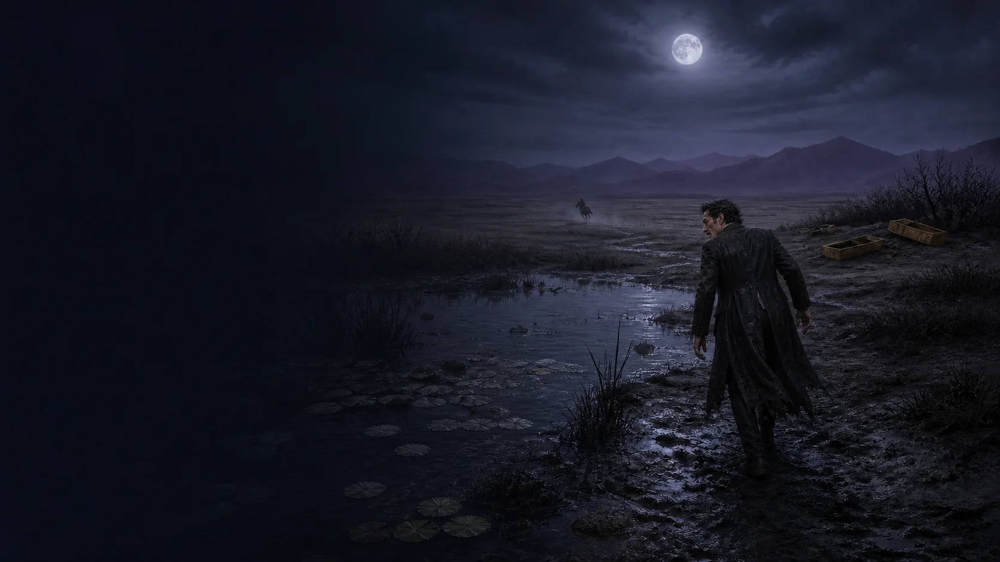

第六幕 · 远东
天河村
客栈
茶还温着。萨托说起明天的计划：找到狄鑫福的遗孀，把钱和米送过去。
困意渐渐袭来。
客栈门外
门外的人要我解释身份和来由。
语言不通。我只能从行李中拿出一样东西当做证明。
我的意思
→
他们眼中
→
人群传开
饥饿的人
他说会分给全村的人。
旅店主人
若有人闯入，损失算谁的？
地方差役
天亮以前，先把东西扣下。
门外人群68%

逃出客栈
钱袋拖慢了脚步。
离后窗0%
钱袋100%
追来的人36%
按住带着金币，但脚步更慢
松开金币会洒落，逃跑更快
客栈后窗
皮绳挂在了窗栅上。
带着钱袋，翻不过去。

天河村外的荒野
马匹已经跑远，空马镫在风里甩动。
潮湿的衣服冻在皮肤上，钱袋被留在了客栈，马也跑远了。
遣使会修道院 · 清晨
钟声从很远的地方传来。
有人正在清洗我耳边凝固的血。